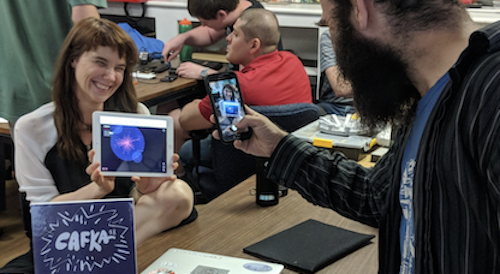
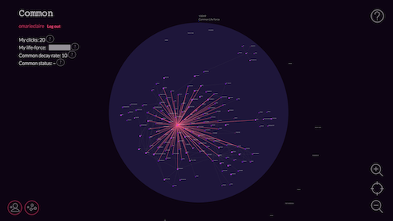
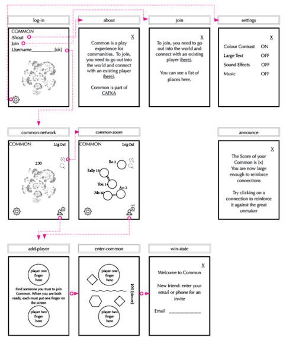
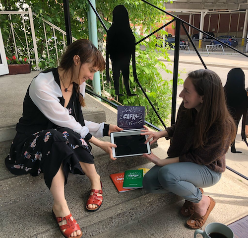

Common
What does it mean to build trust in play?
I made Common for CAFKA – Contemporary Art Forum Kitchener and Area and it was played by hundreds of people in the cities of Kitchener, Waterloo, and Cambridge over the span of a month in 2018.
Common is an experimental video game for communities. It is an exploration of decentralized networks of care and community trust.

How Common works
Common begins with a single player shining brightly in a vast nothingness. The player's life-force is decreasing and they are slowly eroding.
A player generates new life-force by making and reinforcing connections with other players. Strength accrues and flows and increases the life-force of each player as well as the life-force of the larger network.
There is an entropic force constantly deteriorating the life-force and connections of all players. Giant networks may split into subnetworks if the players fail to reinforce their connections. And a player without connections will float out into the void alone.
The only way a player can join Common is by meeting up with an existing player face-to-face. Both players must hold down the connective buttons at the same time until a connection is formed.

For an entire month I stationed myself at different public spaces so that anyone curious to join could come and find me and begin play.
The entirety of the game is shaped by the collective and individual decisions of the players.
Concept
Common is an exploration of:
- Shared experience as a political act
- Community trust as something that is built through attention, care, and stewardship
- Communities as living entities, requiring continuous investment
- Current anxieties around trust as expressed through blockchain technologies and decentralization
- The relationship between individualism, transparency, surveillance, collaboration, and trust
- Attention and care as intrinsically valuable labour
Questions
I think the most interesting thing to share in this documentation is my long list of research questions.
- what is trust?
- what is community?
- what is trust in the context of a community?
- can we create a decentralized network of care?
- who is accountable for our shared environment?
- can a community co-steward resources? Or is the tragedy of the commons an inevitability?
- What is trust?
- Is trust a choice? An action? A state?
- What differences are there between trusting the self and trusting another person?
- What is the act/state asking for trust?
- What is the act/state of trusting?
- What happens to us (in our bodies) when we trust? Are trusted? Break trust? Our trust is broken?
- What is vulnerability?
- What is the relationship between vulnerability and trust?
- What is the relationship between vulnerability and change? And growth?
- Why do we feel so unsafe? Are we unsafe? What is safe?
- What is betrayal? Is betrayal related to trust?
- Can a person be protected from betrayal? What would the implications of that be?
- What does trust have to do with the idea of private property?
- What does it mean for trust if we don’t have private property?
- What about trust and our ownership of our own bodies?
- Who owns the underlying platforms of our realities?
- Who is accountable to these underlying platforms? Who stewards them?
- What about the tyranny of the many? What about the tyranny of the few? Could we exist in intersecting pockets?
- What is the relationship between trust and the traditional idea of self?
- What is faith?
- Is the tragedy of the Commons something that really happens? Is it inevitable?
- What is the relationship between distrust and “the individual actor”?
- What is the relationship between the modern self and trust? Does the fragmentation/multiplicity of identity impact trust?
- Why this desire to be anonymous?
- Does anonymity have to do with shame? With freedom? With fear? With a rejection of the self? With an embrace of the selves?
- What is the relationship between anonymity and identit(ies)? Anonymity and trust?
- Where does decentralization put power?
- Can power be “put” somewhere?
- What is the difference between individual trust transactions and communal trust networks?
- How does trust work in a system?
- Why does most game theory seem to gloss over the most interesting parts of trust (holistically what is it, how do we grow it) in favour of the least interesting part (who acts, who “wins”)?
- What are the implications of total transparency + log-keeping + surveillance?
- What is the relationship between transparency and trust? Is it still trust if there is total transparency?
- Can anything be transparent?
- Are models/filters necessary for representation/viewing? Do models impact transparency?
- What is the relationship between individualism, surveillance, collaboration, and trust?
- Is trust always embodied?
- What about mixed/cyborg bodies and trust?
- Can trust be shared? Is it contagious?
- Is each trust a mutual dance or a one-sided act?
- Is trust more like a digital signal? Or analog?
- What is the relationship between trust and control?
- Can we trust without relinquishing some control?
- What purpose does trust serve? What does it do for us as individuals and as communities?
- “The ability to operate in a decentralized way without needing to trust anyone” (What?)
- What does it mean to centralize power?
- Can power be decentralized? If yes, is this a stable state or does power seek an end-state?
- Is decentralization a matter of decentralizing power? Knowledge? Existence? Like Mycelium?
- Is consensus “neutral”? Is anything neutral?
- Can a system be neutral? Is neutrality just an extension of existing power?
- How do decision making systems impact trust?
- What is peer-to-peer?
- Is anything peer-to-peer when the peers don’t technically own or control the terms of service/platform?
- Blockchain technologies claim to “kill the middleman” but don’t all new middlemen claim this?
- Ethereum is “distributed”. What does that actually mean? What is being distributed, who is doing it, who is receiving it, and how?
- Ethereum claims it is “is a a censorship-proof platform.” Is this even possible? Is there ever freedom from censorship?
- “Apps built on Ethereum don’t need to trust the developer.” How is this possible without code-literacy? Is this possible?
- What does it mean to assume everyone is lying (to only trust the outcome of your own validation)?
- Is trust reliance on someone else?
- How to be trustworthy? (Accountability? Boundaries? Clarity? Competence? Consistency? Commitment? Compassion? Contribution? Evidence-of-caring? Generosity? Honesty? Integrity? Reliability? Shared values? Non-judgement?)
- Is cultural trust shifting right?
- What is care?
- What does it mean for us to care for each other?
- What is the relationship between stewardship and trust?
- What is decentralization? What does this mean?
- Is there such thing as holistic/ecosystem game theory?
- What happens in a Ponzi scheme? A Pyramid scheme?
- Is shared experience a political act?
- What does it mean to share an experience?
- Attention economy?
- What is collaboration?
- Attention as labour, attention as value, attention as commodified labour?
- Are communities living?
- Do communities require continuous investment?
Inspiration / Readings / Playings
My research always involves looking to other games as well as variety of other fields and projects.
Here are some of the games, art projects, installations, and ideas that inspired Common.
This list is a wonderful collection of work and worth the time to explore.
- Navigating & sharing: Closer, Bounden, Colorena, Friendstrap, To the sea, SIHEYU4N, FRU, Snipperclips, Fire Truck, ibb and obb, Zorya, slam city oracles, pico park, CLAPPER
- Communication & Pressure: Space Team, Keep Talking and Nobody Explodes, Lovers in a Dangerous Spacetime, Dreadnought, Edison Escape Room, Marina Abramović (The Story Of Bow & Arrow), !Move or Die,
- Crowd Collaboration:Twitch plays Pokémon, Pong played by a crowd, Catch the Dragon’s Tail, New games movement, !overcooked, Hanabi, Team Pen & so on, !Deathmatch games
- Community inspiration: r/place, masquerade, Nordic Larp, Immersive theatre; Pervasive games, Street games !farmville (specifically invite), !pyramid schemes (inverted: the wealth to the community), !airbnb (trust with strangers), StarColony2000X
- Connection: The end of us
- Decentralized Play: The Flock
- Collabs: Bicycle Built for Two Thousand, Do not touch (esp stay in the green zone, like Tyranny of the rectangle), Checkboxes
- Blockchain inspirations: Clickmine, TetzelCoin, The Ceremony
- Small games for ease of interaction: dumb ways to die, known small games
- Space/Place inspiration: Animal crossing, Lovely weather we’re having, Ingress, Pokémon Go, Alternate reality games
- Flipping games: Spy game, Escher
- Other: Blockchains, Leguin, St. Jude, Elizebeth Smith Friedman, !Libertarian trips, Fungus, mushrooms, spores, Suzanne Simard, ‘Will you be a good neighbour’?, Wild geese flight formation, My teacher flunked the planet, Slime Mould, “We are the guardians of this space once we enter” [noisebridge], bleed, contract & opt out ability), Design Patterns, immutability of blockchain vs. trust, surveillance, tracking, and erasure, Cypherpunks, Public and Private space, Friendships, third place, fourth world, fifth world, Prisoner’s Dilemma with communities, !The Evolution of Trust, xenofeminism, Lindsay Dobbin, Speculative fabulation, !Tulip Bulbs in Holland, Art intervention, Tend & befriend, Rhizome, Borges, Slow Games, Brain trust, doing/being/moving as a way of knowing, SF and fantasy, !Tinder (as a portal to connection), hyperlinks, Sarah Blaffer Hrdy (trust), Mind of My Mind, Richard Sennett, gifting & gratitude, Nonviolent communication, Hanabi, Inside a Star-filled Sky (looping)
Tools:
I used D3 for data visualization, p5.js for the connection screen, Firebase for realtime interactive multiplayer infrastructure, the database, and web hosting.
Process:
Common took nine wonderful months to design, 90 agonizing days to build, and 30 magical days to play.
While researching I explored many fields: from historical interpretations of "faith", to deep dives into decentralized organizing practices, to Game Theory. I even participated in a blockchain hackathon at the World Crypto Economic Forum.
Common is the most conceptually, creatively, and technically challenging project I have ever worked on.
Press:
Community and Collaborators
Common was the first game where I actively sought out mentors. Thank you to Tiffany Conroy for frontend mentorship, Sarah Friend for everything related to the Ethereum blockchain, Eiríkr Åsheim and Aaron Levin for mentorship with the backend. Thank you to Gordon Hatt for giving me the opportunity to make a game for an entire city. The project would have been completely different without the contributions of the following people:
Aaartgames Berlin, Aaron Levin, Adam Streck, Aileen House, Albert Alexander, Amar Shah, Baris, Brie Code, Claudio Sampaio, Colleen, Colin Fisher, Colin Parsons, Connor Bell, Christian Kokott, David H, Dorice Tepley, Ed Ashton, Enric, Eiríkr Åsheim, Eric Rubin, Eric Thurston, Exile, Game devs at MADE, Gemma, Gordon Hatt, Holly, Hugh D. A. Goldring, Ida Toft, Isabella Stefanescu, James Beardmore, Jan van der Lugt, Jasmin Woeller, Jessica, Julian Hansen, Justine Lera, Jury Rossetti, CAFKA, Kat Dornian, Kristina Taylor, Jay Taylor, Civic Tech WR, Linsey, Lorenzo, Lucas, MADE, Mailis Rodrigues, Mariam Zakarian, Mike Daoust, Mike Mintz, Mitchell Chan, Muriel Thi, Niall Lavigne, Nomi, Norna Ross, Owen Pallett, Rachel, Rahul Jethwani, S Friend, Seungji Ha, School of Machines, Making & Make-Believe, Shayna, Six, Steven Taschuk, Steven Tu, Sulyn Cedar, TAG, Taeyoon Choi, Tengig, Tiffany Conroy, Troy, Yaxi Zhao, Yoshi, scribblegrl